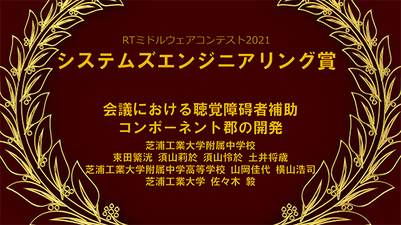
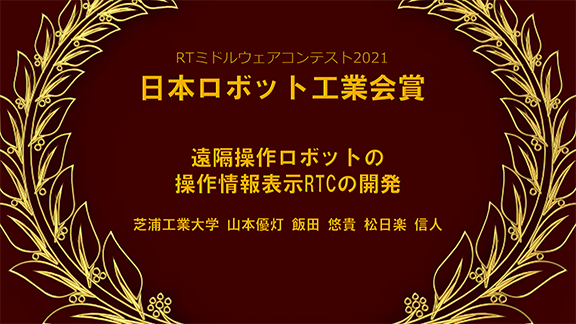
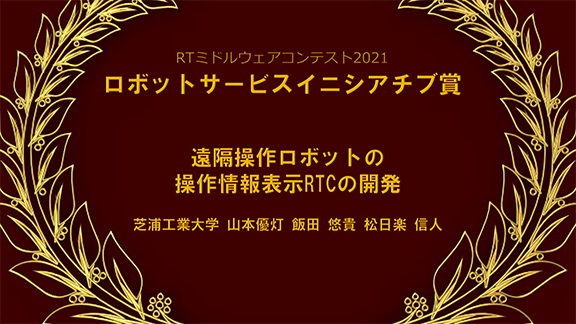
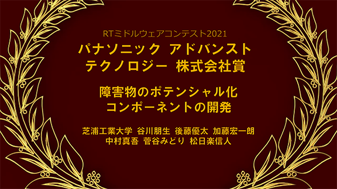
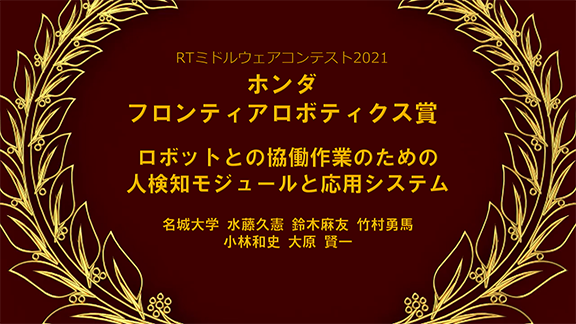
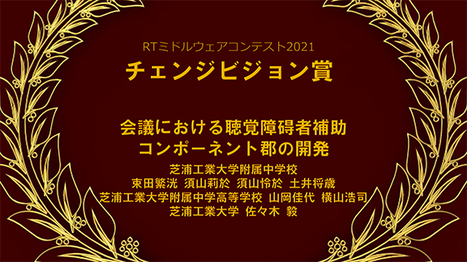
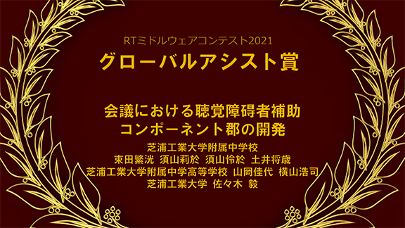
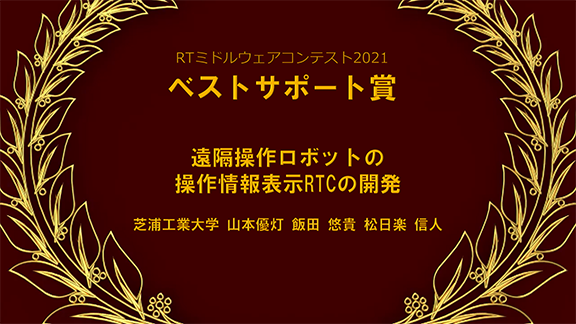
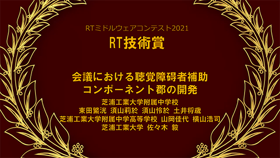

RTミドルウエアコンテスト2021が開催されました
Dec 16, 2021

計測自動制御学会(SICE)システムインテグレーション部門講演会 (SI2021)の特別セッションとして、RTミドルウエアコンテスト2021がオンライン開催されました
今年は6件の応募があり、熱い成果発表が行われました。最優秀賞1件と15件の奨励賞が授与されました。審査結果は以下の通りです。
計測自動制御学会ＲＴミドルウエア賞（最優秀賞）
会議における聴覚障碍者補助コンポーネント郡の開発
芝浦工業大学附属中学校
束田繁洸 殿 (芝浦工業大学附属中学校）
須山莉於 殿 (芝浦工業大学附属中学校）
須山怜於 殿 (芝浦工業大学附属中学校）
土井将歳 殿 (芝浦工業大学附属中学校）
山岡佳代 殿 (芝浦工業大学附属中学高等学校）
横山浩司 殿 (芝浦工業大学附属中学高等学校）
佐々木 毅 殿 (芝浦工業大学）
賞品協賛賞
Dynamixel賞
RTミドルウエアを用いた自動ホワイトボード消しの開発
山﨑 路真 殿 (芝浦工業大学附属高等学校）
亀井達朗 殿 (芝浦工業大学附属中学校）
林蒼二朗 殿 (芝浦工業大学附属中学校）
檜垣葵 殿 (芝浦工業大学附属中学校）
福田啓太 殿 (芝浦工業大学附属中学校）
和田崇志 殿 (芝浦工業大学附属中学校）
中村嶺介 殿 (芝浦工業大学附属中学校）
村上和豊 殿 (芝浦工業大学附属中学校）
良知航星 殿 (芝浦工業大学附属中学校）
山岡佳代 殿 (芝浦工業大学附属中学高等学校 ）
横山浩司 殿 (芝浦工業大学附属中学高等学校 ）
佐々木毅 殿 (芝浦工業大学）
奨励賞（団体協賛）（副賞2万円）
システムズエンジニアリング賞

会議における聴覚障碍者補助コンポーネント郡の開発
芝浦工業大学附属中学校
束田繁洸 殿 (芝浦工業大学附属中学校）
須山莉於 殿 (芝浦工業大学附属中学校）
須山怜於 殿 (芝浦工業大学附属中学校）
土井将歳 殿 (芝浦工業大学附属中学校）
山岡佳代 殿 (芝浦工業大学附属中学高等学校）
横山浩司 殿 (芝浦工業大学附属中学高等学校）
佐々木 毅 殿 (芝浦工業大学）
日本ロボット工業会賞

遠隔操作ロボットの操作情報表示RTCの開発
山本優灯 殿 (芝浦工業大学)
飯田 悠貴 殿 (芝浦工業大学)
松日楽 信人 殿 (芝浦工業大学)
ロボットサービスイニシアチブ賞

遠隔操作ロボットの操作情報表示RTCの開発
山本優灯 殿 (芝浦工業大学)
飯田 悠貴 殿 (芝浦工業大学)
松日楽 信人 殿 (芝浦工業大学)
パナソニック アドバンスト テクノロジー 株式会社賞

障害物のポテンシャル化コンポーネントの開発
谷川朋生 殿 (芝浦工業大学)
後藤優太 殿 (芝浦工業大学)
加藤宏一朗 殿 (芝浦工業大学)
中村真吾 殿 (芝浦工業大学)
菅谷みどり 殿 (芝浦工業大学)
松日楽信人 殿 (芝浦工業大学)
ホンダ フロンティアロボティクス賞

ロボットとの協働作業のための人検知モジュールと応用システム
水藤久憲 殿 (名城大学)
鈴木麻友 殿 (名城大学)
竹村勇馬 殿 (名城大学)
小林和史 殿 (名城大学)
大原 賢一 殿 (名城大学)
チェンジビジョン賞

会議における聴覚障碍者補助コンポーネント郡の開発
芝浦工業大学附属中学校
束田繁洸 殿 (芝浦工業大学附属中学校）
須山莉於 殿 (芝浦工業大学附属中学校）
須山怜於 殿 (芝浦工業大学附属中学校）
土井将歳 殿 (芝浦工業大学附属中学校）
山岡佳代 殿 (芝浦工業大学附属中学高等学校）
横山浩司 殿 (芝浦工業大学附属中学高等学校）
佐々木 毅 殿 (芝浦工業大学）
グローバルアシスト賞

会議における聴覚障碍者補助コンポーネント郡の開発
芝浦工業大学附属中学校
束田繁洸 殿 (芝浦工業大学附属中学校）
須山莉於 殿 (芝浦工業大学附属中学校）
須山怜於 殿 (芝浦工業大学附属中学校）
土井将歳 殿 (芝浦工業大学附属中学校）
山岡佳代 殿 (芝浦工業大学附属中学高等学校）
横山浩司 殿 (芝浦工業大学附属中学高等学校）
佐々木 毅 殿 (芝浦工業大学）
奨励賞（個人協賛）（副賞1万円）
ベストサポート賞

遠隔操作ロボットの操作情報表示RTCの開発
山本優灯 殿 (芝浦工業大学)
飯田 悠貴 殿 (芝浦工業大学)
松日楽 信人 殿 (芝浦工業大学)
カーボンニュートラルロボティクス賞
感染症予防と衛生的手洗い推進のためのハンドドライヤ併用式自動アルコール消毒器の開発
鈴木 成一郎 殿 (芝浦工業大学附属高校)
辻 健人 殿 (芝浦工業大学附属高校)
原 晃志 殿 (芝浦工業大学附属高校)
三宅 莞楓 殿 (芝浦工業大学附属高校)
小谷真輝 殿 (芝浦工業大学附属中学校)
古山陽翔 殿 (芝浦工業大学附属中学校)
山岡佳代 殿 (芝浦工業大学附属中学高等学校)
横山浩司 殿 (芝浦工業大学附属中学高等学校)
佐々木毅 殿 (芝浦工業大学)
RT技術賞

会議における聴覚障碍者補助コンポーネント郡の開発
芝浦工業大学附属中学校
束田繁洸 殿 (芝浦工業大学附属中学校）
須山莉於 殿 (芝浦工業大学附属中学校）
須山怜於 殿 (芝浦工業大学附属中学校）
土井将歳 殿 (芝浦工業大学附属中学校）
山岡佳代 殿 (芝浦工業大学附属中学高等学校）
横山浩司 殿 (芝浦工業大学附属中学高等学校）
佐々木 毅 殿 (芝浦工業大学）
女流RTコンポーネント賞
該当なし
便利ツール賞
該当なし